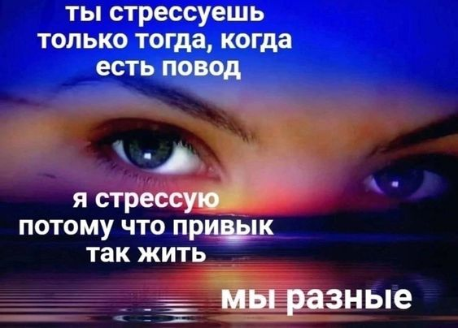
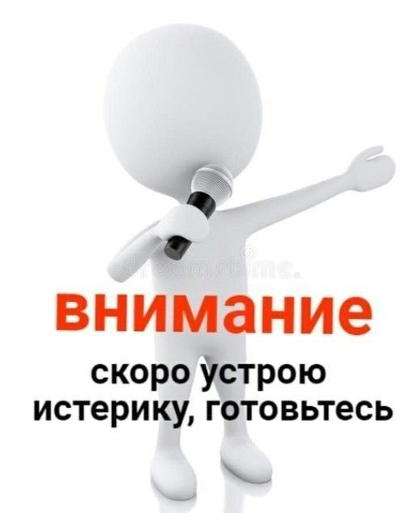
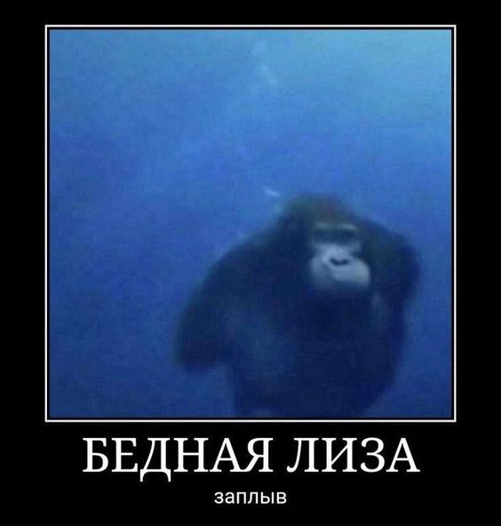
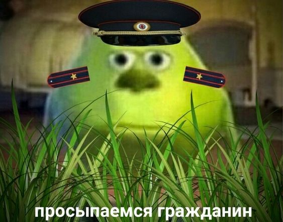
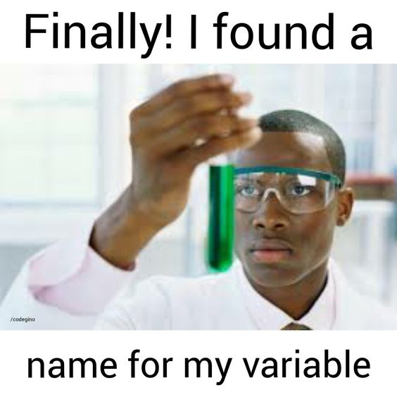

Фритрек и нулевой спринт: Подготовка к работе
</СТРЕСС>
Это было самое начало пути. На этом этапе важно было проникнуться основами и настроиться на учёбу. И, возможно, подумать, как новые знания могут повлиять на ваше будущее.
Начало обучения я встретила в стрессе, так как параллельно у меня была работа и еще одно обучение по сайнд-дизайну. Я уже планинровала заводить календарик недосыпа. Меня пытались отговорить, так как такой график казался авантюрой, однако я очень сильно хотела обучиться фронт разработке. Когда я впревые попробовала это направление, я поняла, что это еще одна деятельность, которая откликается у меня очень сильно. Поэтому мне не хотелось терять время на раздумья.Спринт 1.
<ЗЛОСТЬ>
Дурколет
В первом спринте я прошла опыт от злости и обиды на весь мир за то, что у меня не принимают работу, до принятия реальности такой, какая она есть. И это сильно помог мне в следующих спринтах. На данном этапе обучения я еще держалась бодро и вроде даже успевала по графику.Спринт 2 и 3
<ОТЧАЯНИЕ>
Я все исправлю...починю...и налажу...
Здесь я впервые познакомилась с пропуском дедлайна и бессоной ночью в попытке исправить увеличивающиеся комментарии ревьюера. Да, скажу честно, было пролито немало слез, так как чаще всего, я делаю ошибки из-за невнимательности и могу в упор бесконечно долго их не видеть. Я чувствовала себя жутко глупой, когда видела, как все уже впереди планеты, а я до сих пор не понимаю, чем absolute от relative отличается.Первые победы
<ПОБЕДА>
Надо радоваться, не надо напрягаться...
Нет более приятного ощущения, чем то, когда ты буквально за 10 минут сделал всю разметку сайта правильно, а если еще и адаптив быстро сделал, да еще и сам метко подключил все файлы к корневому. В общем где-то на 3 спринте я поняла, что уже могу спокойно себя чувствовтаь перед чистым листом. Да, 3 проект дался мне кровью и потом, но только потому что в целом в дне у меня оставалось очень мало времени на кодинг, задерживаться после дд не хотелось. Я спешила, делала кучу ошибок и сдала работу только на последней итерации.Расслабленность при кодинге
<РЕЛАКС>
Дымок...пошел по комнате дымок...
Я знаю, что в этом проекте у меня тоже будут замечания. Но эта работа - моя таблетка дофамина. Когда я писала этот сайт, я делала это с невероятной уверенностью, будто четко знаю, что делать и как. Плюс непонятные моменты стали даваться гораздо легче, уже проще соображаю, что и где может быть не так. В общем, круть!Я заглянула в статьи по шаблонизаторам
<СНОВА СТРЕСС>
Земную жизнь пройдя наполовину...
В розовом мире CSS и HTML я совсем забыла о существовании JS и REACTJS...Я на самом деле переживаю, ведь в моем опыте был и python и java, и это было очень больно в изучении...Надеюсь, мне не прийдется спорить на повышенных тонах с компьютером в 2 часа ночи, как это было при изучении других языков. Пусть мир JS мне только показался жестоким и черствым, надеюсь, он будет хотя бы смешным и абсурдным...Хочу, чтоб в моей жизни главной проблемой было только то, как назвать перменную
<УВЕРЕННОСТЬ В КОДИНГЕ>
!false - такой ли ты false, каким притворяешься...
Смотрю я иногда на крутых программистов, и мечтаю также пафосно сидеть за компьютером, смотреть на непонятные (понятные мне) строчки, напрягать лицо и смеяться над мемами про джунов. Конечно, есть еще много чего, что бы мне хотелось достичь кроме программирования. Но я уже чувствую, что вот-вот смогу поставить галочку возле одной из целей и со спокойной душой смеяться над шуткой "!false", ведь я шарю.Я понимаю вашу усталость от проверок работ, надеюсь, вас улыбнули картинки.
<ПРОСТО МЕМ>
Здесь просто смешная картинка!